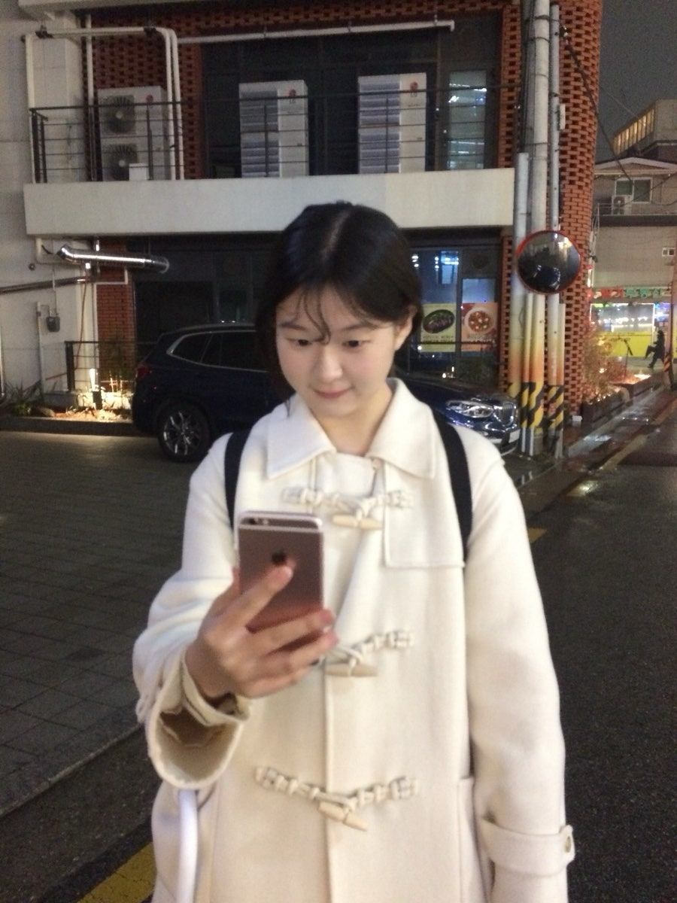
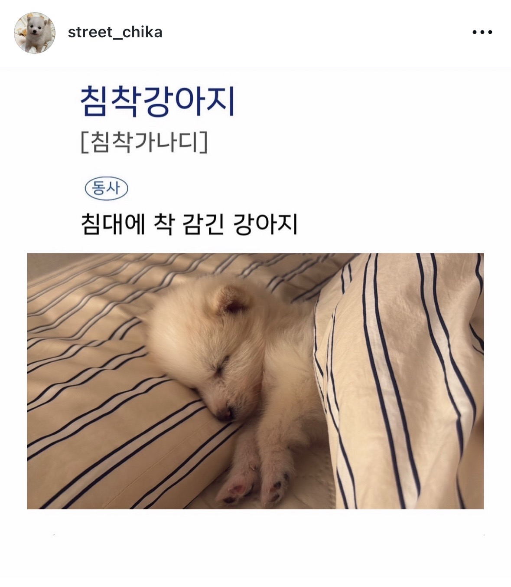
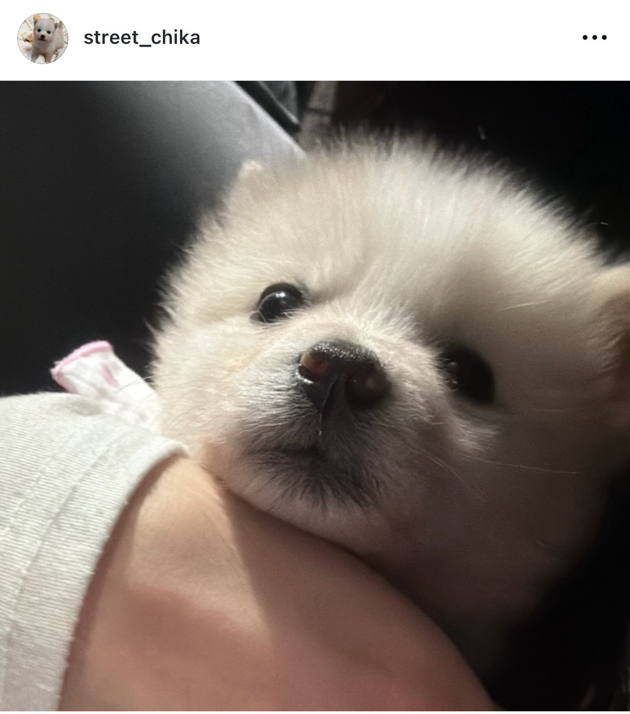
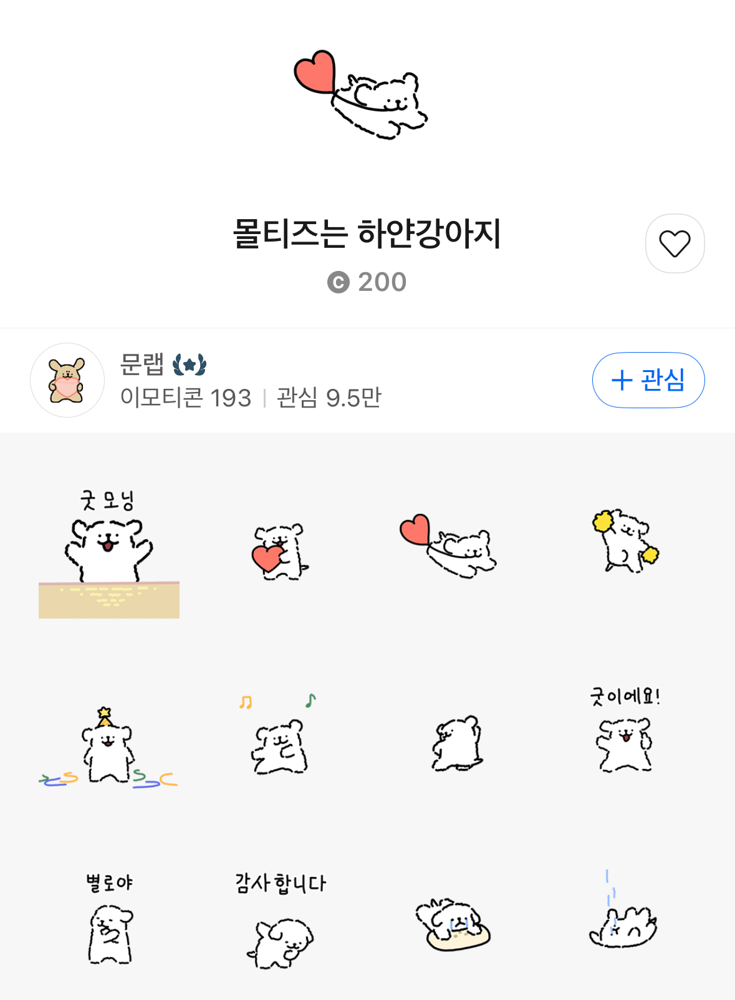
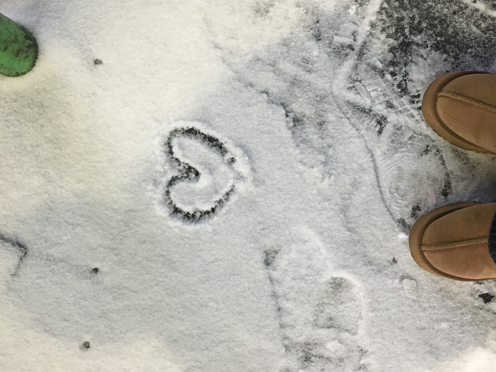
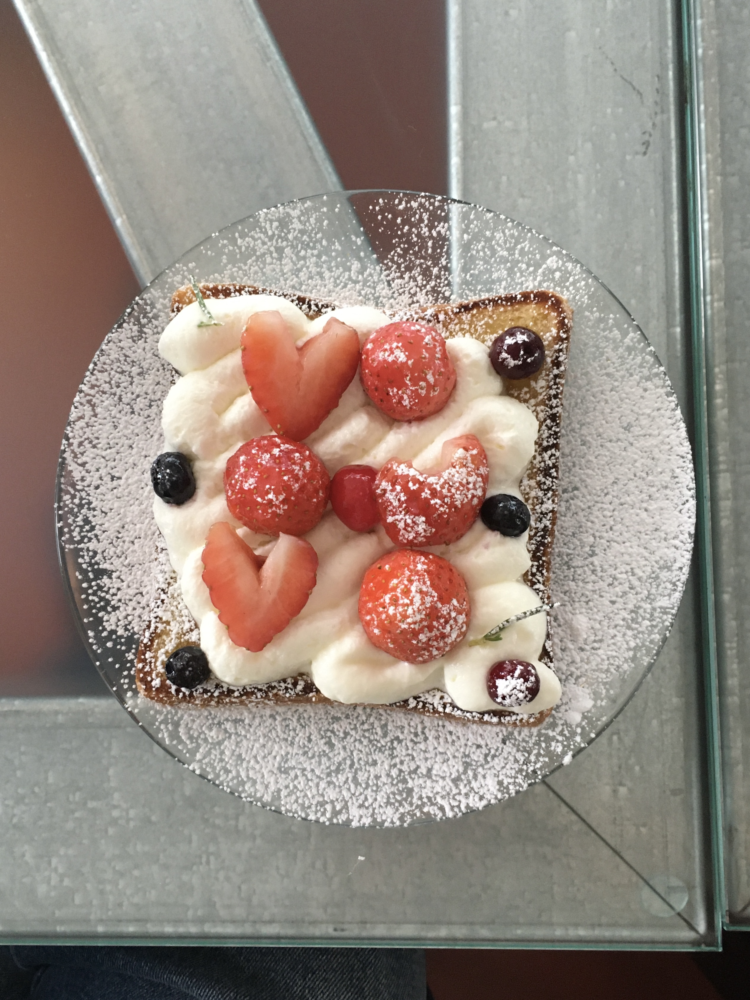
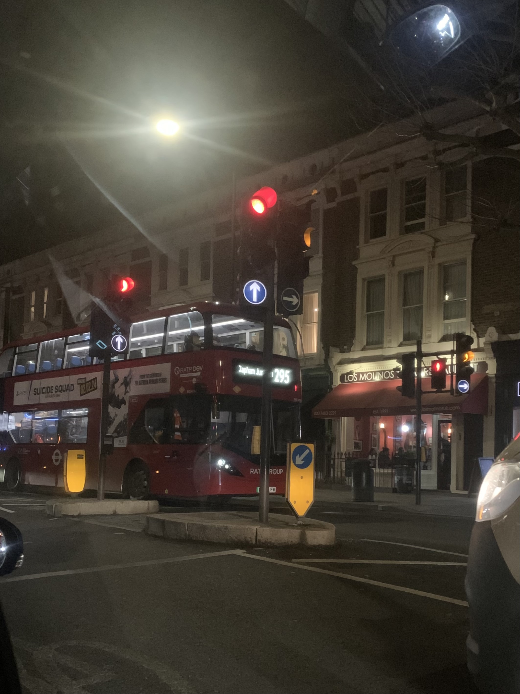
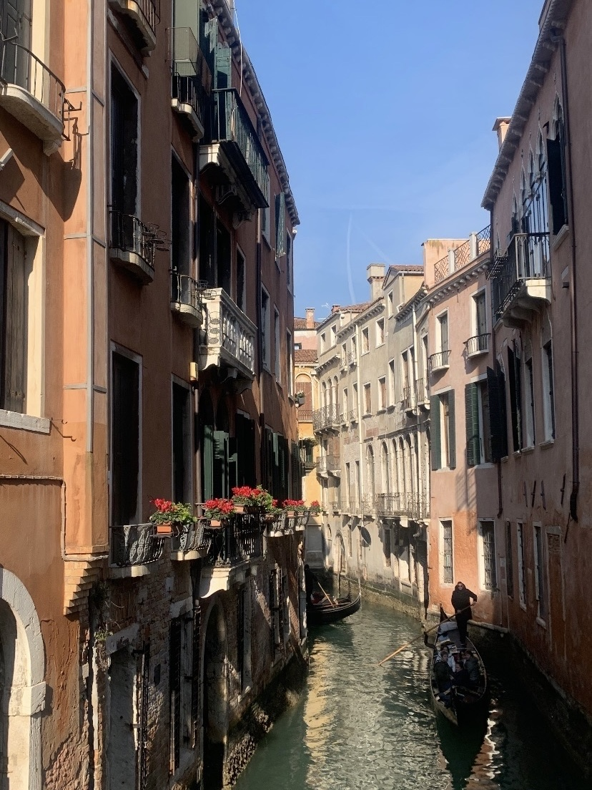
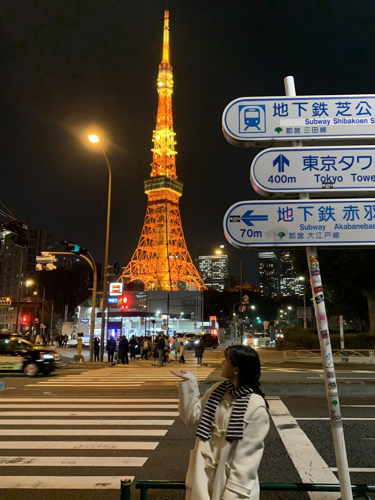

Ha Eunbyul
2004.01.17
백엔드 아기사자
About Me

안녕하세요 정보보안암호수학과 하은별입니다-!
밑에 간단한 사진들과 함께 저에 대해 소개해 보겠습니당
My Favorites
저는 강아지를 엄청 좋아해요! 나중에 기회가 되면 꼭 키우고 싶은..
너무너무 사랑스러운 생명체 아닌가요?????


제가 요즘 인스타에서 좋아하는 강아지 치카예요!
밑에 인스타로 구경해보세요 🐶

제가 애용하는 몰티즈 이모티콘입니당
하얗고 귀여운 걸 좋아해요
여러 시리즈가 있으니 한 번 사용해보세요!

저는 사계절 중 겨울을 제일 좋아하는데요
그 이유 중 하나가 바로 눈이랍니다
아무도 안 밟은 눈 밟는 거를 좋아해요 ㅎㅎ

디저트도 엄청 좋아해요
특히 딸기가 들어간 디저트를 좋아하는데
크림이 너무 많거나 느끼한 거만 아니면
다 잘 먹습니당



방학이나 시간이 되면 여행 다니는 것도 좋아해요 ✈️
개인적으로 기회가 되면 호주나 캐나다를 꼭 가보고 싶어요!